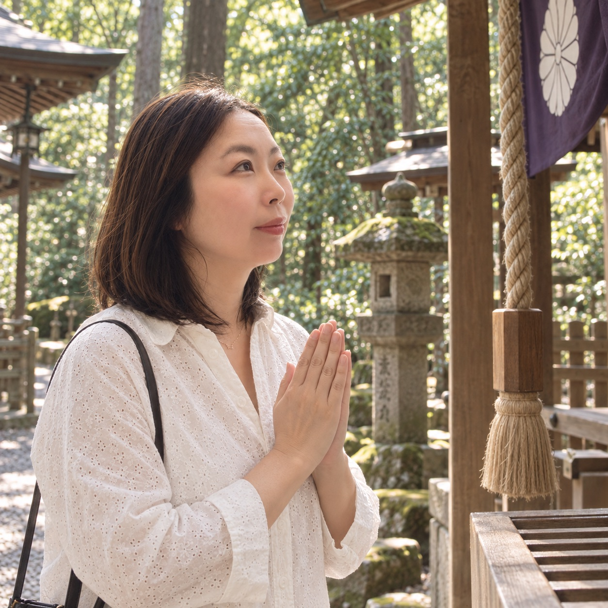
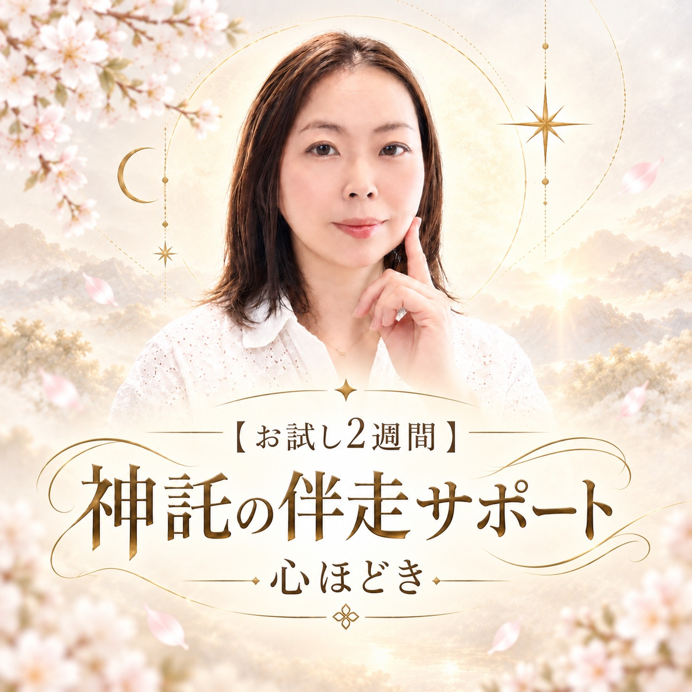
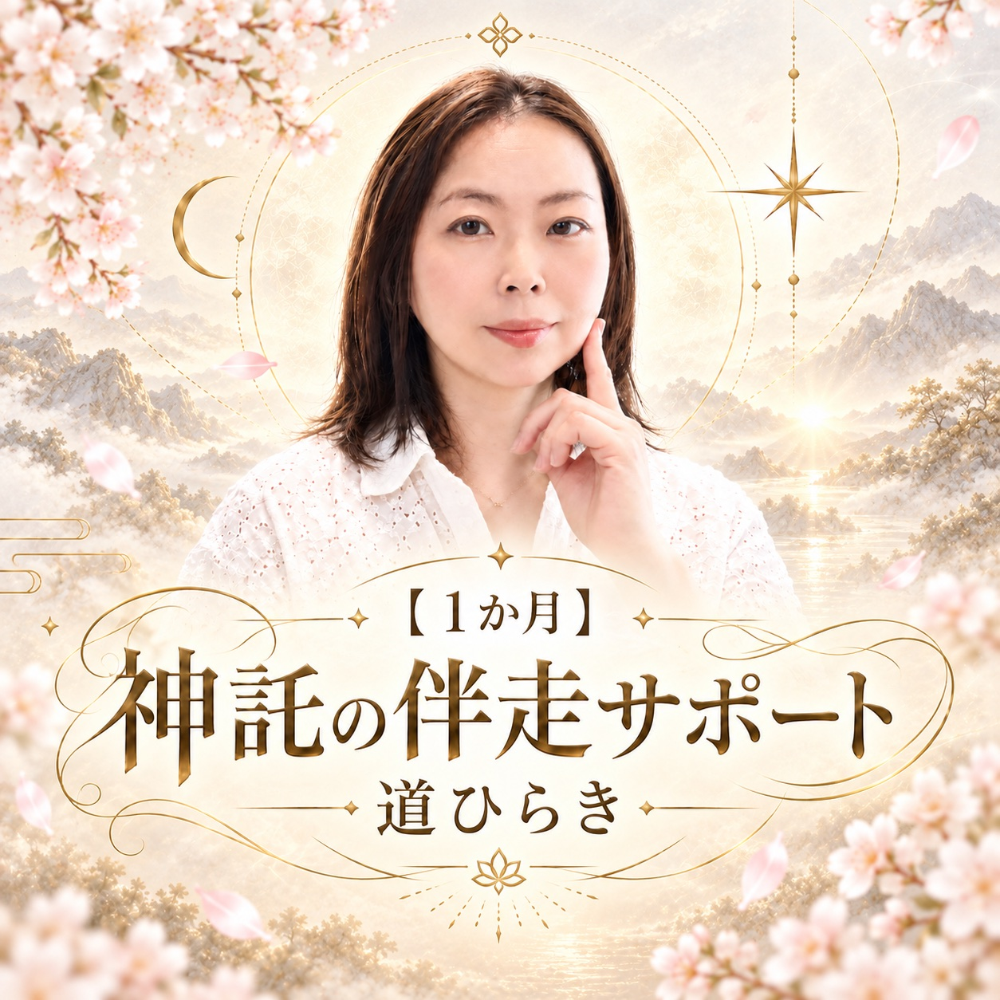
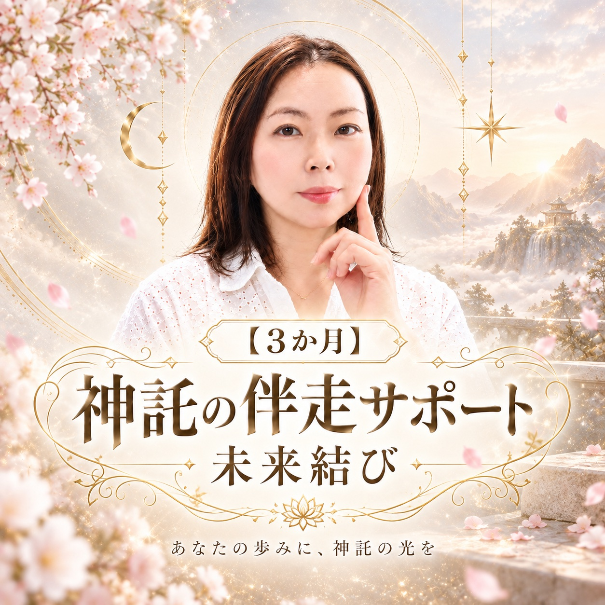

💫
心の状態に合わせた
毎朝のヒーリングメッセージ
その日の心を整え、鑑定の言葉をより深く受け取れる状態へ戻すためのメッセージをお送りします。

このページを初めて開いてから3日間。
再読み込みしても残り時間は戻りません。
3日間のご案内は終了しました。
現在の受付状況は、下の商品案内をご確認ください。
本鑑定を読んだ瞬間は、心が軽くなったかもしれません。
「これで進める」「もう大丈夫」そう思えたのに、日常へ戻ると、少しずつ不安が戻ってくる。
これは、あなたの意志が弱いからではありません。人は慣れた場所へ戻ろうとするもの。だで、戻りかけたときに声をかける人が必要なんです。
鑑定は、未来へ進むための地図です。
でも、地図を持っていても、途中で霧が出たり、道が分かれたり、怖くなって立ち止まる日はあります。
迷った日に話す。揺れた日に整える。神託を忘れかけた朝に、もう一度受け取る。そうやって少しずつ、自分で選べる感覚を育てていきます。
伴走で受け取れるものを見る毎朝のメッセージ・LINE相談・遠隔ヒーリング特別なことが起きた日だけではなく、
何もないように見える日も見守ります。
その日の心を整え、鑑定の言葉をより深く受け取れる状態へ戻すためのメッセージをお送りします。
迷ったとき、気持ちが揺れたとき、上手にまとめんでも大丈夫です。届いた言葉を読み、今のあなたに必要な視点を返します。
心と魂の状態を整え、日々の選択へ向かいやすい流れをつくります。何も送らない日にも、静かに整えていきます。
変化の途中で見えてきた流れに合わせ、今のあなたに必要な神託と、現実でできる小さな一歩をお伝えします。
※以下はサポート後に起こりうる変化を示す架空の例であり、効果を保証するものではありません。
相手の反応がないとすぐ悪い未来を考えていました。毎朝メッセージを受け取り、揺れたときに相談できたことで、一度落ち着いて自分の気持ちを見られるようになりました。
鑑定を読んでも行動できなかったのですが、今できる一歩を一緒に整理してもらううちに、完璧に準備できるまで待たなくてもいいと思えるようになりました。
毎朝の言葉と定期的なヒーリングで、気持ちが乱れても戻る場所があると感じられました。すぐ解決しなくても、以前ほど自分を責めずに過ごせています。
毎朝のヒーリングメッセージ、LINE相談、週1〜2回の遠隔ヒーリング、神託と行動のヒント。すべて同じように届きます。



ご希望の期間を選び、お申し込みください。
決済時のお名前・商品名・購入完了画面のスクリーンショットをお送りください。
今感じていることや、伴走で大切にしたいことをお聞きします。上手にまとめんでも大丈夫です。
確認ができ次第、毎朝のメッセージと個別サポートを始めます。
生活費を削らなければ難しい方、借り入れをしなければ申し込めない方は、今は選ばないでください。
伴走は、あなたの毎日を守りながら続けるものです。焦らず、ご自身の生活をいちばんにしてください。
神託を受け取っただけで、すべてが一度に変わるわけではありません。
不安に戻る日も、迷う日もあります。それでも、前とは違う選び方をひとつずつ重ねていけば、未来の景色は変わっていきます。
あなたが自分の魂を置き去りにせず歩けるように、必要な間だけ、私はそばにいます。
ひとりで頑張り切れん日があっても、大丈夫だでね。